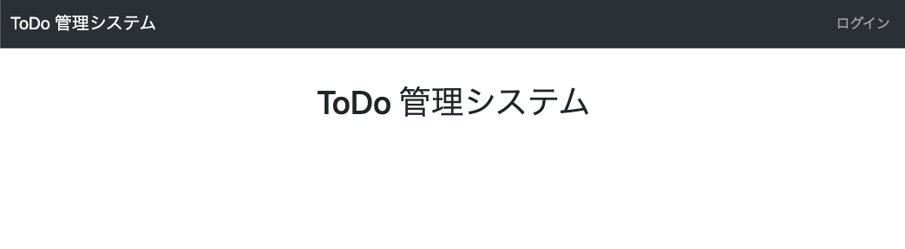
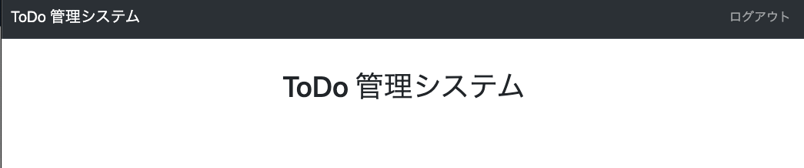

Login/Logout
- Django で用意されている LoginView, LogoutView を使用してログイン/ログアウト機能を実装。
- やること
- urls にログイン/ログアウトの view を追加
- login.html を作成
- base.html の navbar にリンクを追加
tutorial/urls.py 変更
from django.contrib import admin
from django.urls import include, path
from django.shortcuts import render
from django.contrib.auth.views import LoginView, LogoutView # 追加
urlpatterns = [
path("", lambda request: render(request, "index.html"), name="index"),
path("todo/", include(("tutorial.todo.urls", "todo"), namespace="todo")),
path("admin/", include(("tutorial.site_admin.urls", "site_admin"), namespace="site_admin")),
path("admin/native/", admin.site.urls),
path("login/", LoginView.as_view(template_name="login.html"), name="login"), # 追加
path("logout/", LogoutView.as_view(next_page="index"), name="logout"), # 追加
]
tutorial/templates/login.html 作成
{% extends "base.html" %}
{% load static %}
{% block title %}ログイン{% endblock %}
{% block script %}
<script type="text/javascript">
$(function(){
$("#id_username").addClass("form-control");
$("#id_password").addClass("form-control");
});
</script>
{% endblock %}
{% block content %}
<form method="post">{% csrf_token %}
<div class="card">
<div class="card-header text-bg-primary">
<h4 class="card-title">ログインフォーム</h4>
</div>
<div class="card-body">
<table class="table table-bordered">
<tbody{% if form.username.errors or form.password.errors %}{% elif form.errors %} class="">
<tr><th colspan="2" class="table-danger">ユーザー名とパスワードが一致しませんでした。</th></tr{% endif %}>
<tr {% if form.username.errors %}class="table-danger"{% endif %}>
<th>{{ form.username.label }}</th>
<td>{{ form.username.errors }}{{ form.username }}</td>
</tr>
<tr {% if form.password.errors %}class="table-danger"{% endif%}>
<th>{{ form.password.label }}</th>
<td>{{ form.password.errors }}{{ form.password }}</td>
</tr>
</tbody>
</table>
</div>
<div class="card-footer align-center">
<input class="btn btn-primary btn-lg" type="submit" value="ログイン" />
<input type="hidden" name="next" value="{{ next }}" />
</div>
</div>
</form>
{% endblock %}
tutorial/templates/base.html 変更
{% block nav_right %}
{% if user.is_authenticated %} <!-- この行から追加 -->
<li class="nav-item"><a class="nav-link" href="{% url 'logout' %}">ログアウト</a></li>
{% else %}
<li class="nav-item"><a class="nav-link" href="{% url 'login' %}">ログイン</a></li>
{% endif %} <!-- 追加ここまで -->
{% endblock %}
確認
http://127.0.0.1:8000/ にアクセスして、以下となっていれば OK。
トップページ (非ログイン時/ログアウト後)

ログインページ

トップページ (ログイン後)
